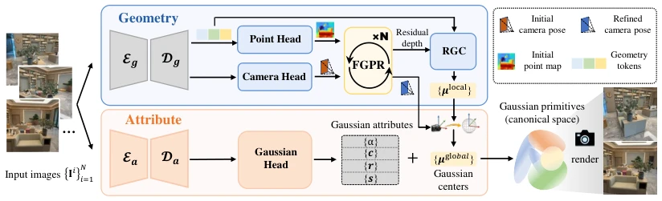
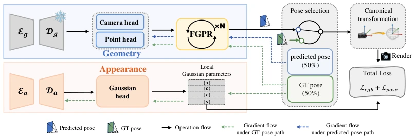
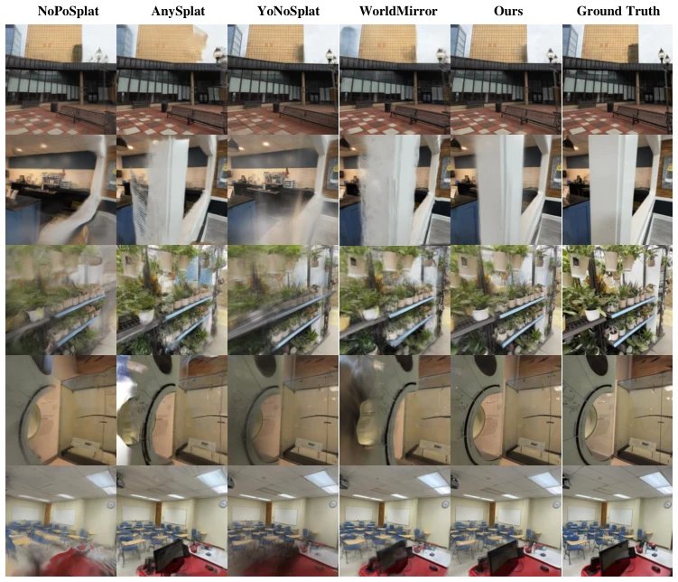
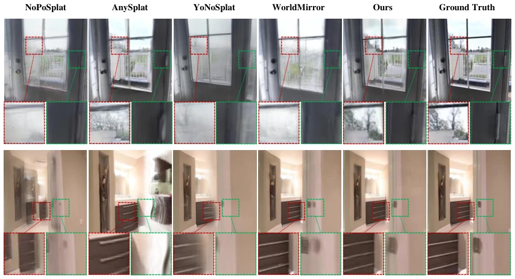

SG-Splat：在位姿不确定下稳定几何学习的前馈高斯泼溅
SG-Splat: Stable Geometry Learning under Pose Uncertainty for Pose-Free 3D Gaussian Splatting
把「位姿误差污染高斯属性」拆成两个分支加双路训练来治：DL3DV 24 视角无位姿设定 PSNR 23.190（YoNoSplat 22.433、AnySplat 19.914），AUC@5 0.849（WorldMirror 0.792）；只用预测位姿训练反而掉到 21.155，说明关键不是「多用预测位姿」而是「用在哪条分支上」。
PSNR on DL3DV 24 views
AUC@5 pose
PSNR on RE10K
PSNR with predicted-pose path only
作者、单位与技术谱系 · Research context
作者与单位
研究脉络
- YoNoSplat（Ye, Chen, Xu, Barath, Pollefeys；arXiv:2511.07321）方法基座关系：SG-Splat 的全部骨干、编码器、解码器与点/相机/高斯头都由 YoNoSplat 权重初始化，并把它作为最重要的同族对照。[论文 §IV-A 与 Table I–III]
- DROID-SLAM / BA-Net 可微 BA（Teed & Deng 2021；Tang & Tan 2018）技术组件来源关系：FGPR 的迭代位姿精化结构、相关体查表与 GRU 更新算子直接沿用 DROID-SLAM，位姿-逆深度联合更新沿用 BA-Net 的可微 BA。[论文 §III-C 与 §IV-A]
- ProSplat / 跨视图一致前馈 3DGS（Lu, Fu, Zhang, Song, Jia, Ma；Pattern Recognition 2026）团队前作关系：同一位第一作者 Xiaohan Lu 与同一末位作者 Siwei Ma 的前作，主题同为跨视图一致的前馈高斯；本篇把问题从「跨视图一致性」推进到「位姿误差下的稳定性」。[论文参考文献 [36] 与 §II-A]
合作网络
- Xiaohan Lu ↔ Jiaqi Zhang ↔ Siwei Ma（北大同实验室共同署名）Xiaohan Lu → Siwei Ma关系：共同署名（同一论文、同一实验室）[论文首页署名与邮箱]
- 北京大学 ↔ 咪咕互动娱乐（校企共同署名）Peking University → Migu Interactive Entertainment Co., Ltd关系：共同署名（同一论文）[论文首页单位标注]
- SG-Splat → YoNoSplat / DROID-SLAM（权重级依赖）SG-Splat → YoNoSplat / DROID-SLAM关系：明确技术依赖（沿用预训练权重与模块实现）[论文 §IV-A Implementation Details]
作者、单位、邮箱取自论文首页，属原文事实；「YoNoSplat 是基座、DROID-SLAM 是 FGPR 来源」由 §IV-A 的显式表述支持；「ProSplat 是团队前作」依据参考文献 [36] 的署名重合，属有来源的解读。原文未标注通讯作者，不推断导师或实验室隶属。
方法本质拆解 · What actually changed
是不是微调？
是「在已有前馈模型上继续训练」，但不是常规单阶段微调。骨干、编码器、解码器与三个头全部由 YoNoSplat 权重初始化，FGPR 的特征/上下文编码器与更新算子由 DROID-SLAM 初始化，新增层零初始化；随后按四阶段课程训练（耦合预训练 → 只训 FGPR → 只训 RGC → 端到端），共 100k 步、单卡 L20、batch 1。所以权重确实改过，且改动的核心是把一个耦合模型拆成双分支再分别注入精化模块。
有没有额外约束？
约束集中在三处：几何侧用 SE(3) 对数映射的位姿损失（只在 FGPR 精化后的位姿上监督，γ=0.9 强调后期迭代），并明确不加逐像素深度监督（理由是 3DGS 的 α-blending 渲染深度不等于预测深度，且预测深度在相机系难以跨视图一致）；表示侧用有界乘性修正 S=1+0.2·tanh(ΔM) 限制点图改正幅度；训练侧用「每场景一次 Bernoulli(0.5) 选位姿」把位姿来源变成离散条件变量，并在预测位姿路径上切断属性分支梯度。
推理/后端到底做了什么？
推理是一次前馈加 T=2 次 FGPR 迭代：图像 → 双分支 token → 点图/相机初值 → 相关体 + 光流 + GRU 修正对应场 → 可微 BA 更新位姿与逆深度 → RGC 修正点图 → 变换到规范系 → 与属性拼成高斯。没有逐场景优化、没有全局 BA、没有回环或测试时自适应；FGPR 是训练好的模块，不是推理时的迭代优化器。代价是每个样本要做两次相关体构建与 DBA，具体时延作者未报告。
方法本质是什么？
本质是把位姿误差的传播路径切断并局部化：先用 FGPR 把位姿误差压小并把它转成可用的深度残差，再用 RGC 把这个残差变成点图的乘性修正，最后用双路训练保证「属性分支只在可信对齐下学习」。它改变的不确定性是「位姿误差 → 高斯属性梯度」这条通道的增益；它没有做的是动态场景、未知内参、回环，也没有把位姿协方差显式建模成不确定性传播——位姿好坏仍由损失隐式表达。
输入未标定多视图与 YoNoSplat/DROID-SLAM 预训练权重；把位姿精化（FGPR）与点图校正（RGC）插在几何分支、把属性分支隔离，并用真值/预测位姿各半的非对称梯度回流训练；直接效果是同一骨干下 DL3DV 24 视角 PSNR +0.76 dB、AUC@5 +0.05。

结论与问题Conclusion & Motivation
核心结论
SG-Splat 的核心主张是：无位姿前馈 3DGS 的瓶颈不是「有没有位姿监督」，而是「位姿误差通过规范变换污染了谁」。作者把网络拆成几何分支（点图 + 相机头）与属性分支（高斯头），再用 FGPR/RGC 先把位姿与点图对齐，最后用「真值位姿 / 预测位姿各半」的双路训练决定梯度回流到哪条分支。DL3DV 24 视角无位姿设定下 PSNR 23.190、SSIM 0.772、LPIPS 0.171，而 YoNoSplat 22.433/0.735/0.205、WorldMirror 20.664、AnySplat 19.914；相对位姿 AUC@5 为 0.849，高于 WorldMirror 0.792 与 π³ 0.829。RealEstate10K 6 视角无位姿设定同样第一：25.478/0.863/0.130，YoNoSplat 为 25.334/0.848/0.135。
动机与问题
现有无位姿前馈 3DGS 可分三类，作者在 Fig.1 里画成四种位姿使用策略：用预测位姿且监督位姿（AnySplat）训练/推理一致但被位姿误差扰动；用真值位姿（WorldMirror）训练稳但训练-推理不一致；完全自监督、不用位姿监督（E-RayZer）仍要用预测位姿做变换，位姿误差照样污染优化；YoNoSplat 混用但预测位姿采样概率很低，只是弱暴露。作者的诊断是：只要高斯属性与位姿在同一个渲染损失里联合优化，属性分支就会去「吸收」位姿误差，表现为视觉合理但几何不可靠。因此要解决的不是位姿精度本身，而是误差的传播路径。这个诊断可被他们的 Table IV 直接检验：只把 FGPR 打开、其他冻结时 PSNR 只从 22.361 升到 22.499；而用预测位姿训练（FGPR+Pred）反而跌到 21.155，说明「让属性分支看见位姿噪声」是有害的，问题确实出在传播路径上。
方法Method
方法总览
输入 N 张未标定位姿图像，几何分支用 DINOv2-Large 编码器（24 层）与 18 层交替注意力解码器得到几何 token 与相机 token，分别经点图头、相机头输出初始局部点图与初始位姿；FGPR 迭代 T=2 次修正位姿并输出深度残差 ΔD；RGC 用 ΔD 与几何 token 产出有界乘性修正，得到精化点图；精化点图乘上采样位姿得到规范系高斯中心；属性分支独立预测颜色、旋转、尺度、不透明度，最后拼成完整高斯集合。训练分四阶段：先用耦合基座（无 FGPR/RGC）预训练拿到稳定初始化；再复制编码器/解码器分成两支，冻结其余只训 FGPR；然后只训 RGC；最后端到端联合微调。这个「先分开再合」的课程，解决的是三个模块同时优化时的互相干扰。
关键技术细节
FGPR 借自 DROID-SLAM：把深度转成逆深度后按「有效值均值」归一化（阈值 τ=0.05 滤掉极远点），保证不同场景尺度下数值量级一致；特征编码器与上下文编码器在 1/8 分辨率上构建 4D 相关体，相关查表 + 由当前位姿与逆深度 warp 出的相机运动光流一起送入 3×3 卷积 GRU，输出对应场修正 Δp，再由可微 BA 联合更新位姿与逆深度。RGC 的设计选择值得记：它不直接回归加性偏移，而是预测有界乘性修正 S=1+β·tanh(ΔM)，β=0.2，作用在初始点图上，作者明确说这样比加性偏移更稳、不易过修。双路训练里，位姿的选择是按场景采一次 Bernoulli(0.5) 并广播到所有视图；选真值位姿时全模型更新，选预测位姿时把渲染梯度从属性分支 detach、只更新几何分支，这就是「非对称优化」的全部内容。

实验Experiments
实验设置
训练与评测在 DL3DV（10,510 个真实场景、5,130 万帧，训练时排除 140 个 benchmark 场景）与 RealEstate10K（YouTube 房产视频，6 视角稀疏设定）上；DL3DV 评测 12/18/24/32 输入视角、8 个目标视角，RealEstate10K 评测 6 输入视角。指标为 PSNR/SSIM/LPIPS 以及相对位姿的 AUC@5°/10°/20°。基线分两组：无位姿组 NoPoSplat、AnySplat、WorldMirror、YoNoSplat；有位姿组 MVSplat、DepthSplat；位姿侧另比 MASt3R、VGGT、π³。实现细节：所有骨干、编码器、解码器、点/相机/高斯头都用 YoNoSplat 预训练权重初始化，FGPR 的特征/上下文编码器与更新算子由 DROID-SLAM 初始化，新增层零初始化；分辨率 224×224，单张 L20、batch size 1、100k 步，T=2，LPIPS 权重 λ=0.05、位姿损失权重 β=0.02。
实验数字与比较
Table I（DL3DV）：无位姿 24 视角本方法 23.190/0.772/0.171，YoNoSplat 22.433/0.735/0.205，WorldMirror 20.664/0.697/0.241，AnySplat 19.914/0.635/0.312；有位姿 24 视角本方法 23.163/0.775/0.174，YoNoSplat 22.664/0.758/0.192。32 视角无位姿本方法 22.430，YoNoSplat 21.525，即摘要所说最大 0.91 dB 增益出现在最密视角。Table II（RealEstate10K 6 视角）：无位姿 25.478/0.863/0.130，YoNoSplat 25.334/0.848/0.135，WorldMirror 23.795/0.844/0.152；有位姿 25.041/0.849/0.132，DepthSplat 24.172/0.848/0.141。Table III（位姿）：DL3DV 24 视角 AUC@5/10/20 本方法 0.849/0.920/0.960，WorldMirror 0.792/0.895/0.947，π³ 0.829/0.914/0.957，VGGT 0.653/0.824/0.911；RealEstate10K 6 视角 0.801/0.896/0.946，YoNoSplat 0.745/0.878/0.932。注意作者自己的口径：π³ 与 VGGT 的训练语料本就包含 DL3DV/RE10K，属于强对照。
消融/失败边界
Table IV（DL3DV 24 视角）逐级加模块：base 22.361/0.735/0.203；只训 FGPR 22.499；FGPR+预测位姿 21.155/0.647/0.213（比 base 更差）；FGPR+真值位姿 22.912/0.751/0.192；FGPR+混用位姿 23.078/0.763/0.181；再加 RGC 23.190/0.772/0.171。这组数字说明三件事：其一，单独训 FGPR 收益很小，因为其余模块冻结时位姿精化无法被下游利用；其二，单纯暴露预测位姿会破坏优化，必须有非对称的梯度切断；其三，RGC 在混用位姿之上再加 0.11 dB PSNR 与 0.010 SSIM，量级不大但方向一致。Table V 扫 FGPR 迭代数：T=1 时 23.079/0.761/0.179、AUC@5 0.794；T=2 时 23.190/0.772/0.171、0.849；T=3 时 23.183/0.770/0.170、0.851——PSNR/SSIM 在 T=2 饱和，AUC 仍微升，作者据此取 T=2 作为质量与成本的折中。
局限与迁移Limitations & Transfer
局限与待核验
作者明确承认三条限制：假设内参已知（in-the-wild 图像不满足）；像素对齐的前馈表示会产出视角相关且冗余的高斯，表示不紧凑；高分辨率重建的训练与推理成本仍然很高。我们还要补四个核验点：第一，训练需要真值位姿，因此它是「有位姿监督的无位姿推理」，不能当作纯自监督方法引用；第二，全文没有报告推理时延、显存与 FGPR 的额外开销，而 T=2 意味着两次相关体构建与 DBA，实时性未知；第三，骨干权重全部来自 YoNoSplat，与 YoNoSplat 的比较共享初始化，增益中有多少来自架构、多少来自额外训练阶段，需要看训练步数与算力是否对齐（文中未给基线重训预算）；第四，RGC 的 β=0.2 与 FGPR 的 τ=0.05 都没有敏感性扫描，遇到尺度差异大的场景（航拍、街景）时这两个硬编码可能成为失效点。
与你研究路线的关系
这篇对我们的直接价值是「位姿不确定性该进哪条支路」这一条训练规则，而不是高斯渲染本身。可迁移模块有两个：一是双路非对称优化——同一批数据里，一路用可靠位姿提供干净监督，另一路用带噪声位姿只更新几何/位姿参数并切断属性回传，这可以直接搬到我们因子图的训练式前端：让位姿残差只更新位姿块与结构块，不让它污染外观/语义头；二是 RGC 的「有界乘性修正」（1+β·tanh）替代加性偏移，这个技巧对任何「在粗几何上做残差校正」的模块都适用，因为它天然限制了单点修正幅度，避免离群点把局部结构拉坏。下一步实验可以这样设计：在我们现有的位姿-深度联合优化里，把预测位姿按场景以 0.5 概率替换真值位姿，并对比「梯度全回传 / 只回传几何分支 / 只回传位姿块」三种设置下 ATE 与深度 L1 的差异；同时用注入尺度漂移的位姿检验 β=0.2 的边界，看修正上限是否该随残差统计自适应。





